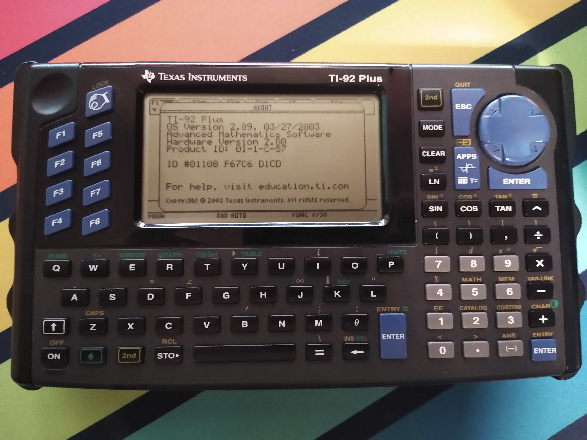

My Wabsite
Table of Contents
Hrrrrrng. Always embarrassing to talk about the things you made. It’s the Wheels Problem.
All of these projects – and especially the ones I’m not showing you – took up days and weeks and months of my life, and by the end of it the number one lesson I’d learned was “oops, that was the wrong way to do it”. Very valuable! Also a hit to the ego. Why can’t I just be effortlessly and intuitively good at everything? Unfair!
Here, in reverse chronological order, is the subset of stuff I hate it less than I don’t. I hope it at least demonstrates a progression in skill and not a regression.
All of ’em toys of varying shades, and most are first tries at new libraries or new patterns or new technologies or new somethings-or-others. One day I’d like to go back to all of them and do ’em right. More right, anyway…
1. Branchless FizzBuzz 2
1.1. Key Technologies
- Org Mode
- https://orgmode.org/
- x64 assembly, via YASM
- https://github.com/yasm/yasm
- C programming language, via gcc
- https://gcc.gnu.org/
- GNU Make
- https://www.gnu.org/software/make/
and the “Euler’s FizzBuzz” function described here: http://philcrissman.net/posts/eulers-fizzbuzz/.
1.2. The Pitch
This is an implementation of the classic “FizzBuzz” interview problem in a combination of x64 assembly and C that uses
absolutely no conditional logic to implement the actual “What do we print for this number i?” logic, inspired by this
blog post. Doing so in assembly was not strictly necessary, of course, but I wanted full control of the executable’s
content. (Can’t trust an optimizing compiler to follow my silly rules.)
This is also an attempt to explore so-called “literate programming” with Emacs org-mode. The README is the README, and
also the source code, and also the comments, and also the documentation; all of it interleaved together.
1.3. Post-Mortem
This one is misnamed, which I only realized too late. It should be something like “No-Conditional Logic FizzBuzz”.
See, my original attempt was called “Branchless FizzBuzz”, and “Branchless” was a lot more accurate to that project. (It relied on lookup tables as substitutes for
Jccinstructions. Cheating!)Now I can’t rename the repository without breaking links to it. Oh well.
- Intel’s Software Developer’s Manual(s) are admirably comprehensive, but a bad place to start if you’re a beginner. I should have gone with AMD’s from the start; they’re simpler reads, organized far better for learning than pure reference, and don’t bother with a lot of the legacy details that aren’t important to me (yet).
Discriminating between inputs and composing result characters are both shockingly easy with bitwise operations, once you’ve derived the theory. A little disappointingly easy. Perhaps I’ll try a v3 where I also ban bitwise instructions? I’m unsure how well that would work – would it just devolve into re-deriving bitwise math from other instructions?
I suppose I might just have to see for myself…
- The “literate” workflow is a joy on small projects. Every language should have the ability to embed spreadsheets into non-code! Or to do these kinds of polyglot code and data generation!
However, I have some reservations about applying it to anything bigger (tenish files, say):
orgjust doesn’t integrate with modern toolchains well enough. How am I supposed to use LSP when all my source is in these discretized chunks all interleaved with text, other files, other languages, etc?org-babel-detangleand then jumping back and forth between representations? Sounds pretty error-prone. Indirect buffers? Ewwwww.multi-mode? Noope. Not unless they put enough work into it to rival Skynet.Doc comments are less powerful but they’ll never give you such a hassle. Even better, they don’t lead to editor lock-in. Emacs is brilliant, but also bad marketing. “Join our project, it requires you to spend five years learning an editor from the 70s to get comfortable!”
Nonetheless, I still find myself wanting to do this again. For scripts, configuration files, small personal projects, little corners of big projects, perhaps documentation, stuff you were already using Emacs for… I can see a home for
org-babelhere.
2. Balanced Ternary in Minecraft
No repository, sorry, but here’s a short video I made:
2.1. Key Technologies
- Minecraft: Java Edition
- https://minecraft.wiki/w/Minecraft_Wiki
- Balanced ternary
- https://en.wikipedia.org/wiki/Balanced_ternary
2.2. The Pitch
Okay, so, a bit of context is needed here.
Minecraft is a very popular video game, famous for many things. It’s a voxel sandbox survival game. It’s a 3-d paint program. It’s a cross-platform scriptable multiplayer minigame client. It’s the only1 Java video game.
What unifies these identities is the promise Minecraft makes to the player: “let go of fidelity, and we’ll let you do whatever you want.”
One of the things you might want to do is build a computer. For this purpose, the game provides its so-called “redstone” system, whereby players can use in-game resources and a few rudimentary binary logic elements (NOT gates, diodes, etc.) to construct complex circuits from first principles.
Another thing that Minecraft is famous for is its “emergent complexity”. With over fifteen years of constant development, systems start to pile up. They interact in inobvious ways. We find that, with the right conditions, at the right intersections of rules, there are new games to play within the metaphysics of the old.
Case in point, the game’s only two fluids – water and lava – have a surprisingly detailed behavior and interaction model. They “choose” where to flow based on the conditions of their environment (“What’s the quickest path to go ‘down’ a unit?”), and when they flow into each other, they change their environment (create a solid block of some kind).
By creating a network of careful shaped channels, we can create circuits which discriminate between possible inputs and selectively create blockages throughout the network. These blockages then halt, redirect, split, combine, or otherwise influence more flows; which themselves can be discriminated and used to selectively create new blockages; and so on, and so on.
This is, in a sense, a kind of transistor or relay. A switch than can toggle other switches. That’s enough to build a digital computer!
Not a binary computer, however. Our circuits have three possible outputs: water, lava, and air. This maps neatly
on the obscure “balanced ternary” number system, where water represents a digit value of 1, air represents a digit
value of 0, and lava represents a digit value of -1.
The embedded video is a sped-up demonstration of a full adder I built using these principles (and a few others, like sand towers which communicate information “uphill”), solving this problem:
\begin{align*} 69 + 34 = 103 = \\ (1 \cdot 3^4 + 0 \cdot 3^3 + -1 \cdot 3^2 + -1 \cdot 3^1 + 0 \cdot 3^0) \\ + (0 \cdot 3^4 + 1 \cdot 3^3 + 1 \cdot 3^2 + -1 \cdot 3^1 + 1 \cdot 3^0) \\ = (1 \cdot 3^4 + 1 \cdot 3^3 + -1 \cdot 3^2 + 1 \cdot 3^1 + 1 \cdot 3^0) \end{align*}Or “Water Air Lava Lava Air” + “Air Water Water Lava Water” = “Water Water Lava Water Water”.
2.3. Post-Mortem
That video is just… not very good. It’s sped up by a weird coefficient, it’s impossible to tell what’s going on, I feel like I’m always pointing the camera at the wrong part of the circuit, I didn’t bother to disable the speed-up effect for the “outro”…
I’m a pretty poor video editor, but I know I can do better than this.
- It’s shame I never got around to writing up a decent guide to the theories of operation here. Or made a central repository of circuit designs. There aren’t a lot of people out there to whom this is all “background knowledge”, so having somewhere comprehensive to point for resources would be a big help.
I’ve never been satisfied with my decision to use sand towers2. It was a concession to practicality3 on a project otherwise so unconcerned with practically, and it always gave such uninteresting solutions to my design problems.
Synchronization, for example. I needed a circuit which would accept a flow of some kind, and then only release it when a second “sync” signal arrived. The difference in complexity between the “pure” solution and the “sand” solution was staggering, and I mean that as an insult to the sand solution. What’s impressive about a glorified sluice gate?
If I revisit this topic, I’d like to eschew sand-based techniques where possible.
3. i68
3.1. Key Technologies
3.1.1. “Apollo”
- Rust programming language & toolchain
- https://rust-lang.org/
- libusb (via rusb crate)
- https://libusb.info/ (https://crates.io/crates/rusb)
- uinput (via uinput crate)
- https://www.kernel.org/doc/html/v4.12/input/uinput.html (https://docs.rs/uinput/latest/uinput/)
3.1.2. “Soyuz”
- TI-92 Plus, TI-89, TI-83 Plus graphing calculators
- https://en.wikipedia.org/wiki/TI-92_series, https://en.wikipedia.org/wiki/TI-89_series, https://en.wikipedia.org/wiki/TI-83_series
- C programming language, via TIGCC
- http://tigcc.ticalc.org/
- C programming language & Z80 assembly, via z88dk
- https://github.com/z88dk/z88dk
- GNU Make
- https://www.gnu.org/software/make/
3.2. The Pitch
This also needs some context. This monster:

is the TI-92+ graphing calculator. It’s a neat little gadget, really stretches the line between “graphing calculator” and “low-spec portable general-purpose computer”. Sporting a QWERTY keyboard, an MC68000SEC processor, a proprietary (but fully reverse-engineered) data I/O port for file transfer, explicit support for running compiled (and actually native, too) programs, and an OS that lets user programs touch all hardware, it makes a pretty good platform for learning bare-metal programming.
So I thought I’d give it a try. I also thought I might try make something practical out of my calculator collection while I was at it, and turn this guy into an input device for my PC. (I don’t have any USB controllers with good D-Pads!)
This required a two-part solution:
- a PC-side driver component, which talks to the calculator over USB (via the official “SilverLink” adapter cable, which supports raw byte reads and writes) and converts the data it receives into keystroke events;
- and a calculator-side driver component, which talks to the PC over the D-Bus I/O port and periodically updates it on the state of its keyboard matrix.
I decided to name them “Apollo” and “Soyuz”, respectively, after the 1975 Apollo-Soyuz Test Project. “Two ideologically-opposed machines coming together for the sake of progress” and so on.
3.3. Post-Mortem
- I still like that logo I made. Probably the only thing here I’m still fully happy with.
At one point during development, I decided to try porting
i68soyuzto the TI-89, which is architecturally very similar to the 92 Plus. That went pretty smoothly, just had to define some different CPP4 symbols in my Makefile and configure a second key map ini68apollo, so I decided to also try porting it to the TI-83 Plus – an architecturally very different calculator – while I was at it. This meant introducing another toolchain (the 83+ is z80-based and not 68k, TIGCC does not support it), re-working my build system, and adding a new set of processor manuals and OS API documentation to my reading list.In hindsight, this was a big mistake. What I should have done was define a common spec and protocol for behavior, then implement it for both architectures separately. I did not do this. I tried to do it all in one codebase.
The first consequence of this decision was that it immediately put me in Makefile hell.
VPATHandincludeand sub-Makefiles everywhere! Took days to engineer, and I still ended up having to put my Makefiles inbuild/instead ofsrc/.The second consequence was that, since I was using the TIGCC C compiler for my 68k targets, I was going to need to find a C compiler for my z80 targets too. I salute the z88dk developers for their effort, I really do, but their tooling just didn’t justify the effort of a unified codebase. None of their backends supported the calling convention used by TI’s OS routines, and their standard library wasn’t any help either – it’s meant to be cross-platform across different historical z80 machines, not just TI calculators – so half my time writing was spent making these four-line “push, exchange/move, call, pop” wrapper functions around OS calls.
The third consequence is that it didn’t even save me any time implementing shared logic! It turns out there kinda wasn’t any. All
i68soyuzdid was glue logic to plug some system calls into each other, and they’re different system calls on different platforms. They behave differently, they take different arguments, they have different invariants. The bulk of my target-specific code ended up just being shims to keep the lie alive.Auto-sleep (“APD”) timers were the straw that broke the camel’s back. They worked, but the experience trying to mangle the code base into working on all targets was frustrating enough to drop the project. Haven’t been back since,
apd-devis still unmerged intomaster.Splitting
i68apolloandi68soyuzinto separate repositories was also a mistake, monorepo would have been a better fit for this project.At minimum, the opportunity to
include_bytes!()Soyuz binaries into Apollo for automated installation (as opposed to writing up instructions for how to install it manually, which is what I ended up doing) should not be overlooked.The actual implementation of
i68apollois complete garbage, and if I ever come back I’d like to throw it away and start from scratch. It’s all hack on top of copy-paste on top of copy-paste on top of “I don’t know half of what’s in the standard library so I’m just going to write my own (bad) implementation!”In particular, those enormous match statements make me feel a little ill. This is what
phf_codegenis for! AAAAHHH!- I regret my choice of
uinputbindings, the same-nameduinputcrate only ever got in my way. I should have either gone up in abstraction to something which is more featureful (and cross-platform), or down to something lower-level likeuinput-sys. Centrism gives the downsides of both and the benefits of neither. rusb, on the other hand, was a pretty good choice. Not happy with how I used it, though. I’ve learned a lot more about the USB spec since making i68, and there’s a lot I’d like to refactor. (I’d also like to make better use of the standard library’s I/O routines to do it, while I’m at it.)Binding the “special” keys (those without good analogs among the traditional X keysym definitions) to the “extra” function keys was a half-measure I never got around to rectifying. What’s the point in using a calculator as an input device if you can’t type math symbols with it?
Ideally, this would be accomplished by writing bona fide X or libinput (or whatever I need to target) keyboard definitions for these devices that map physical (well, emulated by my driver, but I digress) scancodes to sequences of Unicode characters, as well as the appropriate “shift”, “2nd” and “diamond” layers. I want to be able to press 2nd+SIN and have it type “
sin⁻¹(”!The absolutely horrible state of the relevant X.org documentation deterred me from trying this, but I won’t let it deter me forever.
One day…
4. Breakout
4.1. Key Technologies
- Rust programming language & toolchain
- https://rust-lang.org/
- OpenGL (via glium crate)
- https://www.khronos.org/opengl/ (https://crates.io/crates/glium)
- OpenAL (via alto crate)
- https://openal.org/ (https://docs.rs/alto/latest/alto/)
4.2. Pitch
This one’s old enough that I’ve forgotten most of the details. An Atari’s Breakout-style game, yes. Another crack at OpenGL, clearly. There’s also some really half-baked OpenAL here, too. I think the goal was just to keep adding features until it became a chore, then regroup?
4.3. Post-Mortem
- There’s barely any actual OpenAL in this thing. Clearly, an audio engine requires more work to integrate elegantly
into a program than “just slap in some
ifstatements”. I can see why someone would prefer frameworks that do this kind of state management for you. - Despite the lack of hands-on time, I think spent enough time with the
altoand OpenAL documentation that I feel confident saying I’d like to revisit both sometime. I particularly like howaltowraps its API into a singlestruct, that’s very elegant. - I’m still not happy with how I handled working with
glium, but at least it’s saner thanflap.
5. Flap
5.1. Key Technologies
- Rust programming language & toolchain
- https://rust-lang.org/
- OpenGL (via glium crate)
- https://www.khronos.org/opengl/ (https://crates.io/crates/glium)
- Font rendering, via the rusttype cate
- https://docs.rs/rusttype/latest/rusttype/
5.2. Pitch
An earlier attempt to get to grips with glium, Rust’s biggest (?) OpenGL wrapper crate. I’d used OpenGL before, in
both C with glut and in C# with OpenTK. Never got far enough in either language to make something interesting,
unfortunately.
Also, an attempt at “simplicity” that mostly backfired.
5.3. Post-Mortem
- I quite like
glium, I think it provides exactly the kinds of abstractions over OpenGL that I want. - Notably, this is not a Flappy Bird clone, although, if I recall correctly, that was my original plan. When things got too difficult to keep extending, I gave up trying to add features and tried to see if I could make something fun out of what little infrastructure I had.
No memory of exactly why I though that “variable determines function” pattern was a good idea. It was a pain to work with and (apparently) I eventually just gave up trying to work with it. That’s a result of some kind, I suppose.
With hindsight, I think this would be a lot easier to adapt to a composition pattern than I’d realized. Perhaps I’ll give that a try in the future.
6. Chess 2
6.1. Key Technologies
- Java programming language
- https://www.java.com/
- JavaFX
- https://openjfx.io/
- FXML
- https://openjfx.io/javadoc/25/javafx.fxml/javafx/fxml/doc-files/introduction_to_fxml.html
6.2. Pitch
Disclaimer: until now, this list of projects has covered a span of about three-ish years5. This is six years old, which is about as far as I’m willing to go back publicly. This is embarrassing, but the stuff I haven’t covered is humiliating.
Maybe, with time, I’ll un-private “TOWCBL” and we can all have a nice laugh.
This is a chess-like game I threw together partway through High School, written in Java because that’s what AP Computer Science A was teaching.
6.3. Post-Mortem
- Still hadn’t figured out how to get Emacs to stop mixing tabs and spaces for indention, clearly.
- I was going through a phase around this time where I put two spaces between my close parens and my curly braces. I have no idea where I picked it up, but I’m glad I dropped it. It just looks weird.
This project layout is ridiculous. I mean, obviously, but it’s worth saying.
I can’t remember how I was packaging and building the thing, but I’m sure it was something like
javac *.java, and then a really longjar foo bar etc.I’d have to copy and paste. Bleagh.Also, putting the license and README in the docs folder was… well, GitHub doesn’t seem to have a problem with it, so I’m sure it’s a convention somewhere…
I never did it again.
- I really dislike inheritance as pattern, or at least the way Java does it, and I think that started with this
project. “
PoolPiece” should not extendPiece, no matter how tempting it might be. Introducing an additional layer of inheritance with an “InPlayPiece” might help, but ehhhhh I just think the pattern is just flawed from first principles. Conversely, I strongly prefer DSLs for doing UI, and I think that started here, too. The water-tight separation of concerns (how is your business logic going to sneak in to your UI if you can’t implement logic in your UI?) is all-upside, as far as I’m concerned.
Probably won’t ever come back to FXML specifically, unless I have to, however. My memories are foggy but I recall it as a mostly frustrating experience. Probably didn’t help that I clearly had no idea what I was doing…
Footnotes:
As far as the “gamer” public seems to care, anyway.
Sand is one of a handful of “gravity blocks” in Minecraft which will fall if unsupported. See https://minecraft.wiki/w/Falling_block. By supporting a tower of such blocks with a different kind of block, one that breaks upon being flowed-into (e.g. torches), we can selectively change the height of these towers by directing a flow into them. This allows us to communicate information “uphill”, and to create sluice gate-esque structures that can release other fluids at our control.
Minecraft liquids cannot flow uphill, and they also cannot flow horizontally without the flow eventually
terminating (12 blocks horizontal for water, 4 for lava), so circuits end up being very vertical. Unfortunately,
“vertical” is the only axis on which Minecraft worlds are not effectively infinite – an unmodified game only allows
building between Y=320 and Y=-64.
That’s CPP as in C Pre-Processor. Not that other thing.
I can’t remember why exactly there’s such a big gap here. I was doing hobby programming, I’m sure of it, but I never uploaded any of it anywhere. If I find something interesting, I’ll update this page.